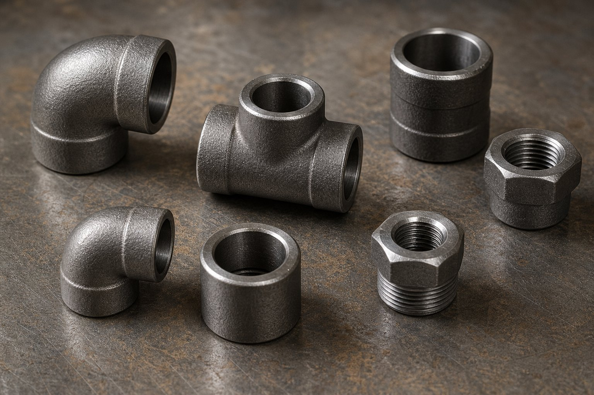

جایگاه اتصالات فورج سایز کوچک
در سایزهای کوچک که اتصال جوشی لببهلب رایج نیست، اتصالات فورج این استاندارد حاکم است. این اتصالات از فولاد فورج ساخته میشوند و به دو روش جوشی ساکت و رزوهای به لوله متصل میگردند. کلاسهای فشاری بالاتر از فلنجهای همسایز، آنها را برای خطوط پرفشار کوچک مناسب میکند.

کلاسهای فشاری
| کلاس | کاربرد رایج |
|---|---|
| دو هزار | فشارهای پایین تا متوسط در سایز کوچک |
| سه هزار | رایجترین کلاس خطوط ابزار و پرفشار |
| شش هزار | سرویسهای پرفشارتر |
| نه هزار | سرویسهای بسیار پرفشار خاص |
فشار مجاز واقعی به متریال و دما بستگی دارد و باید از جداول فشار-دما استخراج شود.
انواع رایج
- زانوهای ۴۵ و ۹۰ درجه برای تغییر مسیر.
- سهراهیهای برابر و تبدیلدار برای انشعاب.
- بوشن و بوشن نصفه برای تغییر سایز.
- مهرهماسوره برای نقاط دمونتاژ.
- درپوش برای بستن انتهای خط.
جوشی ساکت در برابر رزوهای
در اتصال جوشی ساکت، انتهای لوله در کاسه اتصال قرار گرفته و جوش گوشهای زده میشود؛ آببندی بالا و مناسب سرویسهای حساس. در اتصال رزوهای، بدون جوشکاری و فقط با پیچیدن اتصال نصب میشود؛ سریع و قابل دمونتاژ اما با ریسک نشتی بیشتر. انتخاب را حساسیت سرویس و نیاز به باز و بست تعیین میکند.
متریالها
- فورج کربنی برای خطوط عمومی.
- فورج دمای پایین برای سرویس زیر صفر.
- فورج آلیاژی برای دمای بالا.
- فورج استنلس برای سرویس خورنده و بهداشتی.
نکات خرید
- نوع، سایز و کلاس فشاری را دقیق ذکر کنید.
- متریال همخوان با لوله انتخاب کنید.
- برای رزوهای، نوع رزوه را مشخص کنید.
- گواهی مواد با شماره ذوب درخواست کنید.
- در سرویسهای حساس، بازرسی چشمی و ابعادی در تحویل انجام شود.
کاربردهای پروژهای رایج
- خطوط ابزار دقیق و نمونهگیری.
- اتصالات تخلیه و ونت تجهیزات.
- خطوط پرفشار کوچک در واحدهای فرایندی.
- انشعابهای کوچک از هدرها و لولههای اصلی.
- سیستمهای تزریق مواد شیمیایی.
تحویل و کنترل
- کنترل حک کلاس و متریال روی هر اتصال.
- بازرسی چشمی کاسهها و رزوهها.
- اندازهگیری ابعادی نمونهای.
- تطابق گواهی مواد با شماره ذوب.
خطاهای رایج نصب و نکات بازرسی اتصالات کوچک
اتصالات فورج کوچک به دلیل کاربرد در خطوط ابزار دقیق و انشعابهای حساس، اهمیت اجرایی بیشتری از اندازه ظاهری خود دارند و چند خطای رایج در نصب آنها، میتواند منشا نشتیهای بعدی باشد. در اتصالات جوشی ساکت، اولین و مهمترین نکته، فاصله انتهای لوله تا کف ساکت است؛ اگر لوله بدون فاصله تا ته ساکت جوش داده شود، در زمان کار و انبساط حرارتی، تنش در ناحیه اتصال تجمع و زمینه ترک ایجاد میشود. فاصله مناسب باید قبل از جوشکاری تنظیم و در طول جوشکاری حفظ شود. دوم، تمیزی ساکت قبل از جوش است؛ زنگ، روغن یا ذرات باقیمانده داخل ساکت، کیفیت جوش را تحت تاثیر قرار میدهند. سوم، کنترل اندازه جوش محیطی است؛ جوش باید متناسب مشخصات طراحی اجرا شود و جوش بیش از حد بزرگ، هم هزینه اضافی است و هم تمرکز تنش ایجاد میکند. در اتصالات رزوهای، خطاهای رایج دیگری وجود دارند: استفاده از نوار یا ماده آببند نامناسب با سیال و دمای کاری، که در دماهای بالا یا سیالهای خاص باید متناسب انتخاب شود؛ سفت کردن بیش از حد که میتواند به رزوهها آسیب بزند یا بدنه اتصال را تحت تنش قرار دهد؛ و استفاده از ابزار نامناسب که لبههای ششگوش را گرد و امکان آچارکشی بعدی را از بین میبرد. در بازرسی، چند نکته اهمیت دارند: کنترل علامتگذاری شامل گرید، کلاس و سازنده که روی بدنه هر اتصال حک شده است؛ تطبیق رزوهها از نظر نوع و سایز با نقشه، چون رزوههای استاندارد مختلف شباهت ظاهری دارند اما با هم قابل تعویض نیستند؛ و کنترل چشمی سطح فورج از نظر ترک یا فرورفتگی. در خطوط ابزار دقیق، وضعیت ساکت و رزوهها در زمان تحویل باید از نظر تمیزی و محافظت کنترل شود، چون آلودگی داخلی این اتصالات مستقیما به داخل ابزارها منتقل میشود. در نهایت، برای نقاط پرفشار یا سمی، استفاده از اتصالات رزوهای باید با احتیاط بیشتری ارزیابی شود و در بسیاری موارد، اتصال جوشی ساکت یا جوشی لببهلب گزینه مطمئنتری است.
جمعبندی
اتصالات فورج سایز کوچک، حلقه اتصال مطمئن خطوط پرفشار هستند. با ذکر دقیق کلاس و متریال و گواهی مواد، خریدی بدون ریسک خواهید داشت.
سوالات رایج
کلاسهای فشاری این اتصالات چیست؟
اتصالات فورج معمولاً در کلاسهای دو هزار، سه هزار، شش هزار و نه هزار عرضه میشوند که با کلاسهای فلنج متناظرند. انتخاب کلاس تابع فشار و دمای سرویس است.
جوشی ساکت بهتر است یا رزوهای؟
جوشی ساکت آببندی مطمئنتری دارد و در خطوط حساس ترجیح داده میشود؛ رزوهای برای نقاط نیازمند دمونتاژ و سرویسهای غیرحساس مناسب است. مرجع نهایی، مشخصه خط است.
متریال رایج این اتصالات چیست؟
فورج کربنی برای سرویسهای عمومی، فورج دمای پایین برای سرما، فورج آلیاژی برای دمای بالا و فورج استنلس برای سرویس خورنده. متریال باید با لوله همخوان باشد.
در چه سایزهایی استفاده میشوند؟
معمولاً در سایزهای کوچک تا چهار اینچ؛ با کاربرد غالب در خطوط ابزار دقیق، نمونهگیری، تخلیه و ونت و خطوط پرفشار کوچک.
مطالب مرتبط
- راهنمای اتصالات فیتینگ پایپینگ
- راهنمای اتصالات جوشی لببهلب (ASME B16.9)
- فلنج جوشی ساکت یا رزوهای — مقایسه و انتخاب
- فولاد فورج کربنی (ASTM A105)
- استاندارد فلنجهای جوشی (ASME B16.5)
با ذکر نوع، سایز، کلاس فشاری و متریال، اتصالات فورج با گواهی مواد کامل عرضه میشود. برای خطوط ابزار دقیق و پرفشار، جوشی ساکت پیشنهاد میگردد.
مشاهده صفحه محصول ← ثبت RFQ همین محصولتامین این تجهیزات را به پیشرو تجهیز فرتاک بسپارید
شرکت پیشرو تجهیز فرتاک تامینکننده تخصصی تجهیزات صنعتی برای پروژههای نفت، گاز، پتروشیمی، فولاد و نیروگاهی است. برای دریافت پیشنهاد فنی و قیمت، استعلام (RFQ) خود را ثبت کنید تا کارشناسان مهندسی فروش در کوتاهترین زمان پاسخ دهند.
- تامین اتصالات فورجخانواده کامل اتصالات سایز کوچک با گواهی مواد
- تامین تجهیزات پایپینگلوله و فلنج هماهنگ با اتصالات